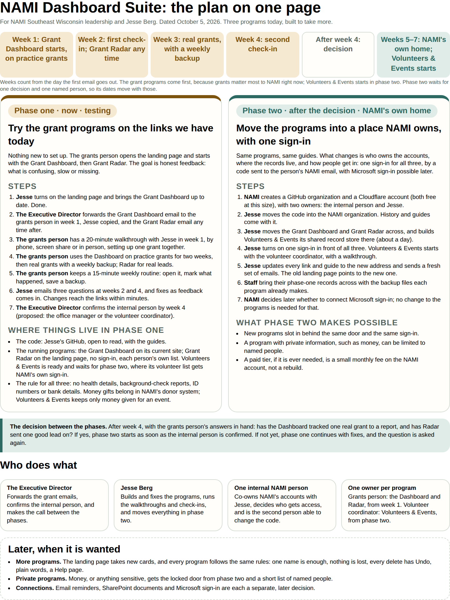

Behind each tab is one chapter. The same handbook, with the same words, is on the NAMI landing page, where it is kept current.
What the three programs are, how they fit together, and the two phases on one page. For everyone; read first.
Everything begins at one landing page: https://jessejberg-cloud.github.io/nami_grant_dashboard/
It has one button per program, these guides, and the project plan. Keep that address; it is the only one you need to remember.
NAMI Southeast Wisconsin has three small web programs. Each one does one job, and each works on its own.
So a grant travels left to right: found in Radar, managed in the Dashboard. Volunteers & Events stands beside them for the event side of the work. Nothing moves between the programs on its own; a person always decides.
The order they start in. The grant programs come first, because grants matter most to NAMI right now: the Grant Dashboard in week 1, Grant Radar soon after. Volunteers & Events is ready and starts in phase two, when the programs move to NAMI's own home with one sign-in.
The three were built to the same rules, so once you know one, the others feel familiar.

How the rollout runs week by week, who does what, the weekly routine, privacy, backups, the risks and what we do about each, and phase two. For the Executive Director, the owners and Jesse.
How the NAMI Dashboard Suite is rolled out, looked after, and kept safe. For the Executive Director, the program owners and Jesse. Dated 2026-10-05.
This chapter turns the plan into weeks, people and habits. It is written for an office where everyone is busy, nobody is the computer person, and a new tool has to earn its place in its first week. Every choice here is made to spend as little staff attention as possible.
Two sentences, not a feature list. By the end of week 4:
Volunteers & Events has its own sentence for phase two: one real event run through it, with jobs, names, who came, and the hours exported to a spreadsheet.
If those happen, phase two is worth doing. If they do not happen, the tool is probably not the problem. The routine or the owner is, and the honest move is to fix that or stop, not to add features.
| Who | What they do | Time it takes |
|---|---|---|
| The Executive Director | Forwards the two grant emails, confirms the internal person by week 4, makes the call between the phases | A few minutes, three times |
| The grants person | Owns the Grant Dashboard and Grant Radar from week 1: uses them for real grants and leads, keeps the weekly routine, answers two check-ins | 15 minutes a week, plus grant work |
| The volunteer coordinator | Owns Volunteers & Events from phase two: the same, for events and volunteers | From phase two |
| The internal phase-two person | Co-owns NAMI's accounts with Jesse in phase two, decides who gets access, is the second person able to change the code. Proposed: the office manager or the volunteer coordinator | A few minutes a month |
| Jesse Berg | Builds and fixes the programs, runs the walkthroughs and check-ins, keeps the guides current, moves everything in phase two | As needed |
Owners are named by role in this handbook. The Executive Director fills in names when forwarding the emails.
The grant programs come first, because grants matter most to NAMI right now. One owner, one real use at a time. Weeks count from the day the first email goes out.
| When | What happens | Who |
|---|---|---|
| Before week 1 | The landing page is turned on and the Grant Dashboard is brought up to date. Both done | Jesse |
| Week 1 | The Grant Dashboard email is forwarded; a 20-minute walkthrough, setting up one grant on practice grants | ED, grants person, Jesse |
| Week 2 | First check-in at the end of the week. The Grant Radar email can be forwarded any time from here | Grants person, ED, Jesse |
| Week 3 | The Grant Dashboard takes real grants, if the grants person is comfortable, with a weekly backup | Grants person |
| Week 4 | Second check-in. The ED confirms the internal person | Grants person, ED, Jesse |
| After week 4 | The decision: go on to phase two, or keep testing with fixes | ED, with Jesse |
| Weeks 5 to 7 | Phase two, if the answer is yes, and Volunteers & Events starts with the volunteer coordinator | NAMI, Jesse |
Everything starts at one landing page: https://jessejberg-cloud.github.io/nami_grant_dashboard/
It has one button per program, who looks after each, what each replaces, all the guides, and this handbook. Put that address in the new-hire document and the staff bookmarks. Every program's Help links back to it, so nobody is ever stranded inside one program.
Volunteers & Events, from phase two. It is built and waiting. It holds names, phone numbers and emails, so it starts behind NAMI's own sign-in in phase two rather than on today's links. Until then nobody is invited to it. The rules below are the ones it will start with. Everyone invited sees the same records, live. Money is recorded here only when it is for an event, such as a sponsor paying for the picnic; NAMI's donor system stays the record of all giving, and the page reminds you to record the gift there too. Food, goods and time can be recorded on their own.
Grant Dashboard. It has no sign-in yet, so anyone with the address could change or delete what is in it. For the first two weeks, use the practice grants only. From week 3, real grants are fine if the grants person is comfortable, with a backup downloaded once a week from Settings & backup. No private details about the people NAMI serves, ever.
Grant Radar. It has no sign-in and saves each person's leads in their own browser, on their own computer. That is its design: it is a personal list, and the Grant Dashboard is the shared place. Keep using the same computer and browser, and save a backup from Help now and then. Use public information only. A shared front-desk computer is the wrong place for it.
A tool that becomes a third place to type the same thing does not survive in a small office. So each program replaces something, and the old list stops being kept.
| Program | Replaces | The bridge in |
|---|---|---|
| Grant Dashboard | the list of grant due dates, wherever it is kept today | Add a grant needs only a name; the rest can wait |
| Grant Radar | the folder of "grants to look at" emails | Add a lead needs only a name and the funder's link |
| Volunteers & Events (phase two) | the event sign-up sheet and the volunteer-hours spreadsheet | Volunteers → Add many at once takes a pasted list |
The owner decides in week 1 whether anything still has to be kept in two places, and if so, which one is the official copy. Write that decision down in one line and tell Jesse.
A 20-minute walkthrough with Jesse, by phone, screen share or in person, whichever the owner prefers. The agenda never changes:
After that, the program's own welcome, tips and Help cover the rest.
Fifteen minutes, once a week, for each owner. This is the whole maintenance load on NAMI in phase one.
Tie it to something that already happens, such as the Monday staff meeting or the day after each event. A routine that lives in a person's week survives; a reminder on a page nobody opens does not.
Jesse emails the grants person three questions at the end of week 2 and week 4:
"Haven't looked yet" is a complete answer, and nobody is chased. In between, replying to any of the program emails reaches Jesse directly. Once the feedback address exists, the landing page will also have a one-tap feedback button.
The same rule in all three programs: no health or diagnosis details, no background-check reports, no ID numbers, no bank details. Notes hold only what planning and thank-yous need.
Phase two adds one NAMI sign-in in front of all three, and a locked door, limited to named people, for any future program with private information such as money. Volunteers & Events starts behind that sign-in.
No program backs itself up automatically. Each makes a backup file in one tap, and a person has to tap it: that is the weekly routine's third step.
| Program | Where the backup button is | What bringing it back does |
|---|---|---|
| Grant Dashboard | More tools → Settings & backup → Download a backup | Adds records; it is not a full restore |
| Grant Radar | Help → Your data → Save a backup | Adds leads you do not have; never overwrites |
| Volunteers & Events (phase two) | More → Backup → Save a backup file | Adds what is missing; never removes anything |
Keep backups on the shared drive, named as the program names them, which includes the date. If something goes wrong, tell Jesse before re-entering anything.
| Risk | What it looks like | What we do |
|---|---|---|
| Adoption dies at the second step | A grant gets entered; its reports never do; Home has nothing useful to say | One owner per program, and the weekly routine tied to an existing moment |
| A third place to type the same thing | The old spreadsheet is still kept "just in case" | Each program names what it replaces; the owner decides the official copy in week 1 |
| One person can change the code | Everything waits for Jesse | The programs keep working unchanged without him; phase two adds a second person with access |
| Young hosting products | A Claude page or a ChatGPT Site changes or disappears | The weekly backup is the safety net; phase two moves to hosting NAMI owns |
| Feedback never comes | People stop using it instead of saying why | Three questions twice, "haven't looked" accepted; real records are the real signal |
| The Executive Director becomes the bottleneck | Decisions wait on the busiest person | The ED's asks are three forwards, one name and one decision |
| Enthusiasm becomes scope | Requests for five more programs | A new program only with a named owner and a named first real use |
| Shared computers | Radar's personal list on a front-desk browser | Radar on one person's own computer; shared grant work in the Dashboard |
| Privacy without a law behind it | Volunteers' details on a public page | The privacy rule above; Volunteers & Events waits for NAMI's sign-in; nothing about clients anywhere |
| Turnover | The person who learned it leaves | One address in the new-hire document; the tour and guides run again for anyone new |
Stop, or re-scope, if after week 4 the records are still only examples, the owner calls it "fine" but cannot name a task it replaced, or the same information is still kept somewhere else as well.
Go on to phase two if a report from the suite has been used for something real (a grant match, a board update, a thank-you list), the owner asks for a change rather than for permission to stop, or a second person has started using it without being asked.
If the answer after week 4 is yes, and the internal person is confirmed:
The landing page is built to take more programs. A new one is built only when it has a named owner and a named first real use, and it follows the same rules as the first three: only a name is ever required, nothing is lost, every delete has Undo, plain words, and a Help page.
Each program on the landing page is marked with how people get in:
The more private the information, the smaller the list of people who can open it.
Before the first email goes out:
During phase one:
Accepted for phase one, and resolved by phase two: the Grant Dashboard is public and has no sign-in; it runs under Jesse's ChatGPT account; Grant Radar's leads live in one browser; there are no automatic backups; nothing has yet been tried with a screen reader or on a real phone in someone's hand.
A few pages for each program: open it, the first things to do, and what to know. For the person using that program.
One page · 2026-10-05 · simple-v2
The workspace keeps track of your grants, the reports each funder asks for, and when they are due. This is a public test site, so please don't type private details about the people you serve.
Practice or real: use Showing at the top right to switch between Practice grants (made up) and Our grants. They are kept separate.
Full manual: open Help, then Full user manual.
Grant Radar 2.1.1, 2026-10-05
Grant Radar is a list of grant leads that might suit NAMI Southeast Wisconsin. It helps you decide what to look at next and passes good leads to the Grant Dashboard. It does not apply for grants or decide who qualifies.
Use public information only. Do not enter client, donor, staff or financial details.
Volunteers & Events 2.2, 2026-10-05
Use it to plan events, fill volunteer jobs, record who came and their hours, and keep track of gifts from supporters. Everything saves as you type. There is no Save button.
Option A: the shared page (best for a team). Open the NAMI landing page, press Open Volunteers & Events, and sign in to Claude if it asks. Everyone the link is shared with sees the same records, and a change shows up for everyone within a few seconds. You can make changes only if the link was shared with you as an Editor. If the top right says View only, ask Jesse to change your access.
Option B: the file (no account, no internet needed). Double-click Volunteers-and-Events.html and it opens in your web browser. Everything is saved in that browser on that computer, so keep using the same computer and the same browser.
The words at the top right say where your work is saved. The first time, a short welcome offers Show me around, a five-stop tour of the tabs. Skip it if you like; it is always under More → Settings.
Name, phone, email.The full manual for each program. The same words are inside each program under Help.
Revision date: 2026-10-05. Release: simple-v2, the simple, step-by-step version. Part 1 is for everyone who uses the workspace. Part 2 is for the person who looks after it.
The workspace keeps track of each grant, the reports and other things each funder asks for, and when they are due. It shows one next step at a time. You don't need to learn it all at once: short tips appear on each page as you go.
Please note: this is a public test site with no sign-in. Don't type private details about the people you serve.
Open the NAMI landing page and press Open Grant Dashboard. A short welcome appears the first time you open the workspace. It has three steps. Press Next to move on, or Skip at any time.
On the last step, choose where to start:
To see the welcome again, open Help and press Show the welcome again.
The menu on the left has four pages:
At the bottom of the menu, More tools opens the pages most people don't need day to day: Money, Reports & proof, Staff tasks, Problems, Grant Radar, Recent changes, and Settings & backup. Press Fewer tools to put them away again. The workspace remembers your choice in this browser.
At the top right, Showing switches between Practice grants (made up) and Our grants. The two are kept separate. Once your organization has real grants, the workspace opens on Our grants.
Each page has one short tip in a pale yellow box. Press Got it to put it away for good, or Later to see it again tomorrow. To bring every tip back, open Help and press Show tips again.
After you save something, a short line at the top tells you where it went, for example "Saved to the To-do list and to Riverside Foundation grant." It goes away by itself.
Home always opens on Your next step: one thing to do now, with one button.
Below it are your grant cards, then Coming up: items with a date in the next two weeks or a date that has passed, anything stuck, and any problem noted.
Press Add a grant at the top of Home or Grants. There are three short steps. The dots at the top show where you are.
Press Save now on any step to save what you have and finish later. Press Save grant on the last step. Back returns to an earlier step, and Cancel closes without saving.
To try it with made-up numbers, choose Practice grants and press Try a $5,000 practice grant on Home.
Click a grant card to open it. The page shows:
Press Edit grant to change any of it. It opens the same three steps.
Open the grant and press Add a report or due date. You can also press the same button at the top of the To-do list.
The form asks four things: what the funder needs, which grant it is for, the due date, and who is doing it. Only the first is required. More options holds the status, a link to a document, notes, and Waits for: another item that has to be done first.
Add a staff task works the same way. A staff task is your team's own work. Finishing a task doesn't finish the funder's report it helps with.
Open the item from Home or the To-do list and press Mark done.
A funder requirement needs a link to what you sent, such as an email, a file on the shared drive, or a web page. If there's no link yet, a box appears. Paste the link and press Save link and mark done.
If the item waits for something else, finish that first. The item it waits for is shown on the right.
Finished items stay in the workspace. On the To-do list, tick Show finished to see them.
I can't find something. Check Showing at the top: practice grants and your own grants are separate. On a list page, check the search box is empty, and tick Show finished.
It says something was changed while I worked on it. Someone else saved it first. Close the form, open the item again, and redo your change.
It says saving isn't working. Nothing you typed has been lost. Wait a moment and press Save again.
The welcome or the tips came back. The browser's saved settings were cleared, or you're using a different browser. Press Skip or Got it again.
Open Settings & backup.
A full restore needs a database backup managed by your administrator, not the in-app download.
The current site is public. There is no sign-in, and the records API returns both Practice and Our grants to anyone who can reach it. Names typed in "Who is doing it" are labels, not permissions. Use made-up or non-sensitive information only until the checklist below is done.
The browser remembers three things: whether the welcome was finished (nami-grants-onboarding-v2), which tips were put away (nami-grants-tips-v1), and whether More tools is open (nami-grants-more-tools). Records are stored in the site's database.
Nothing is connected yet: no Microsoft sign-in, SharePoint, email, calendar, accounting, or automatic Grant Radar searches. No reminders are sent.
Grant Radar 2.1.1, 2026-10-05. The same words are in the app under Help.
Grant Radar is a list of grant leads. A lead is a grant that might suit NAMI Southeast Wisconsin. Radar helps you notice what is coming up, keep track of what you still need to find out, and pass good leads to the Grant Dashboard.
Radar does not apply for grants, contact funders, or decide whether we qualify. People make those calls. Radar just keeps the facts and your notes in one place.
It works in any modern web browser on a computer, tablet or phone. There is nothing to install.
Open the NAMI landing page and press Open Grant Radar. The first time, a short tour points at each part of the screen. Use Next to move on or Skip tour to start straight away. You can take the tour again any time from Help.
Radar starts with four real leads found on public funder pages, and one practice lead that is made up. The practice lead has a purple Practice tag. Try anything on it; nothing real changes.
Each page has a one-line tip at the top. Tap Got it to put it away, or Later to see it again tomorrow. To see every tip again, go to Help and tap Show page tips again.
Home is three short lists:
Tap a lead to open it. See all beside a heading opens the whole list on the Leads page.
The Leads page lists every lead, soonest apply-by date first. Leads with no date come last.
Type in Search to narrow the list by name, funder, owner or notes. The buttons under it switch between Active, Needs checking, Shortlisted, Put away (not for us, archived or closed), and All.
Each row shows the apply-by date. A date within 30 days has a soft amber mark. A small dot means something on the funder's page changed since you last looked.
Tap a lead to open it. At the top are the apply-by date, the amount, and when someone last checked the funder's page.
Status. Tap one of the status buttons to change it: New, Needs checking, Looking into it, Shortlisted, Not for us. Archive is its own button, above. A lead that is archived or closed shows that as its status.
Owner, Next step and Notes save by themselves when you click away. There is no Save button to forget.
Why it might fit, Still to find out and Deal-breakers spell out the reasoning. Radar never gives a lead a hidden score. A promising lead can still turn out not to suit us.
More details opens the rest: who can apply, area, how to apply, matching funds, restrictions and time zone.
Tap + Add a lead. Only the name is needed. If you can, add the funder, the link to the funder's page, the apply-by date and the amount.
For Apply by, choose Date, Rolling (they accept applications any time) or Not sure.
More details holds the rest, including the reasons it might fit and what is still unknown. Put one item per line.
If a lead with the same ID, or the same name and link, already exists, Radar says so and opens nothing new. That keeps your notes in one place.
To edit later, open the lead and tap Edit details.
Funders change dates and amounts. When you have read a funder's page, open the lead and tap I checked the page. Note the date you looked and anything you saw: the apply-by date, the amount, whether it is open, how to apply.
If the apply-by date, amount, time zone, restrictions or way to apply changed, Radar marks the lead changed and says what changed. Your notes, owner, status and next step are never overwritten. Tap OK, noted to clear the mark.
A page not checked for more than 30 days shows Time for a fresh look.
Tap Archive to put a lead away. A message appears with Undo. Archived leads are kept; find them under Put away on the Leads page and change their status to bring them back.
Nothing in Radar is deleted for good.
The Find grants page holds your search preferences: area, topics, who can apply, amount, what to skip, and search words. Tap to turn each one on or off. They save straight away.
The search buttons open a ready-made search in a new tab: the web, Grants.gov, the Greater Milwaukee Foundation, and Wisconsin community foundations. When you find something, come back and add it as a lead.
Radar does not search on its own. A weekly automatic search needs the agency to set up its own account and scheduler. Until then, searching is done by people, using these buttons.
Preferences are not facts about the agency. Whether we qualify is always checked on the funder's page.
The Send page moves leads into the Grant Dashboard in three steps:
Why Radar leaves Sent leads out: the Dashboard turns away the whole file if even one lead in it is already there. If you need to send one again, tick it by hand. Delete the old copy in the Dashboard first.
Practice leads are sent on their own, so they can go into the Dashboard's Practice grants and never mix with real ones.
A lead sent to the Dashboard is still a lead. It does not become an award there until someone decides it is one.
Radar saves as you go. When you open it through a Claude link while signed in, your leads are also kept with your Claude account, so they follow you to another computer. Otherwise they are saved in this browser on this computer.
Clearing your browser's data, using a private window, or switching browsers can hide leads saved only in the browser. So once in a while, go to Help, then Your data, and tap Save a backup.
Open a file reads a Radar backup, a Radar send file, or a Grant Dashboard export. It adds leads you do not have and skips the ones you do. It never overwrites.
Start fresh puts the starting leads back. It asks first, and offers Undo.
In Help, under Your data and comfort:
Radar also follows your device's dark mode and reduced-motion settings.
Volunteers & Events 2.2, 2026-10-05. The same words are in the app under More → How to use this.
Volunteers & Events keeps NAMI's events, volunteers and supporters in one place. You plan an event, list the volunteer jobs, add people by name, mark who came, and the hours add up on their own. Gifts from donors, sponsors and partners are tracked as promised or received.
It works in any modern web browser on a computer, tablet or phone. There is nothing to install and no Save button: everything saves as you type.
There are two ways to open it.
Volunteers-and-Events.html. It opens in your browser and saves everything in that browser on that computer. It needs no account and no internet.The first time, a short welcome lists the three steps (add an event, add the jobs, type a name under a job). Show me around starts a five-stop tour of the tabs, with a row of dots to show where you are. Skip closes the welcome. Both are always available again under More → Settings.
Some pages show a one-line tip at the top. Got it puts it away for good. Later brings it back tomorrow. More → Settings → Show the tips again brings every tip back.
Home shows one thing at a time:
The heading shows today's date and your organization's name once you have set it in Settings.
The Events tab lists what is coming up, events with no date yet, and past events. Search events narrows the list by name, place or notes. Past events are kept; Show older events opens the rest.
New event starts one. A name is enough. Each event has a date, start and end times, a place, how many guests you expect, and notes (parking, what to bring, who to call). They all save as you type.
Under the event you will find its volunteer jobs, a to-do list, any gifts promised for it, and after the day, a box for the total number of people who came.
Print a sign-in sheet makes a page for the door: each job with the names signed up and blank lines under it, a table for walk-ins, and a line for the total number of people who came. Print it from the browser, take it to the event, and afterwards type what the sheet says back into the event (Came, and the hours).
Make a copy starts a new event with the same jobs, place, times and to-dos, ready for a date. Delete event moves it to Recently deleted.
On an event, Add a job adds a row for one kind of help: Greeter, Setup, Food table. Give it a name and how many people it needs. A job that still needs people shows a soft yellow label, for example "2 spots open"; a full job shows Filled. If a job runs at different times from the event, set its own start and end under the job; those times are used for its hours.
Remove this job (the small ×) takes the job and its sign-ups off the event. Undo in the message at the bottom brings it back.
Under a job, type a name and press Enter or tap Add. As you type, names already in your Volunteers list are suggested. A name that is not in your list is saved as a new volunteer for you, and the message at the bottom says so. The same person cannot be added to one job twice.
The small × beside a name takes that person off the job, with Undo. Tap a name to open the volunteer's page.
A volunteer can also sign up from their own page: under Signed up for, choose an event and job and tap Sign up.
Once the event's date arrives, each name on a job shows Came and Didn't come. Tap one. Everyone came at the top marks everyone at once, with Undo. Home reminds you once about a recent event that still has people not marked.
When someone is marked as came, a box for their hours appears, already filled in from the job's times, or the event's times if the job has none. Leave it, or type a different number. Hours count in quarter hours. A volunteer's hours for the year show on their page, and More → Volunteer hours adds everyone up.
The Volunteers tab lists everyone, in alphabetical order, with what they like to help with and a phone or email. Search finds people by name, phone, email or interest. New volunteer adds one by name.
A volunteer's page has their phone, email, what they like to help with, when they are usually free, and notes. Under Ready to help you can tick Training done and Background check done, each with a date. Taking a break keeps someone on the list but out of the name suggestions until you untick it; they show in their own group at the bottom of the list.
Add many at once takes a pasted list, one person per line, with commas between name, phone and email. Only the name is needed. Names already in your list are skipped, so pasting the same list twice is safe.
The Supporters tab is for donors, businesses, sponsors, partners and foundations. New supporter adds one. A supporter's page has the kind of supporter, a contact person, phone, email and notes.
Add a gift records one gift: food or goods (what), time or a service, or money (with an amount). A new gift starts as food or goods. You can tie a gift to an event and give it a date. Every gift is Promised until you mark it Received. Gifts tied to an event also show on that event's page.
Money is recorded here only when it is for an event, such as a sponsor paying for the picnic. NAMI's donor system is the record of all giving, so a money gift here must be tied to an event, and the page reminds you to record it in the donor system as well. A money gift that is not for an event belongs only in the donor system.
Under More, Volunteer hours adds up the hours of everyone marked as came at events between two dates (this year so far, unless you change the dates). It shows the total hours, how many volunteers helped and how many events, with a table by person.
Gifts shows money received and promised for events, and every gift of food, goods or time in those dates, with a table.
Both pages have Copy for a spreadsheet, which copies the table so you can paste it into Excel or Google Sheets, and Download spreadsheet file, which saves it as a file that Excel opens.
For the board puts the same dates into four lines: events held and people who came, volunteer hours and who gave them, money received and other gifts, and the dates covered. Copy these lines puts them on the clipboard for a board update or a grant report.
If a value of one volunteer hour has been set in Settings, Volunteer hours and For the board also show what the hours are worth in dollars, the figure funders ask for as in-kind match.
The words at the top right always say where your work is: Saved for everyone with this link, or Saved in this browser. While a change is on its way it says Saving….
On the shared link, each change saves on its own, so two people can work at once. If two people change the very same box at the same moment, the last one typed is kept. If someone removes a record for good while you are changing it, a message says so and that change is not kept.
With the file version, another computer or browser will not see your records. Save a backup now and then, and bring it back on the other computer.
More → Backup → Save a backup file saves everything (events, volunteers, supporters, gifts) as one file. Keep it somewhere safe, like your documents folder or a shared drive. The file is named with the date.
Bring a copy back adds the records from a backup file. Nothing is removed: new records are added, and a record that is in both places keeps whichever version was changed last. A file that is not a backup from this app is refused in plain words.
Every delete has Undo in the message at the bottom of the screen. A deleted event, volunteer or supporter goes to More → Recently deleted, where Bring back restores it. Remove for good asks you to tap it twice.
More → Settings has your organization's name (shown at the top of every page), the value of one volunteer hour (blank until NAMI picks a rate; once set, the hours reports show dollars too), three text sizes, and light or dark colors, or match your device. Text size and colors are saved for you on your own device, so each person can choose their own.
No health or diagnosis information, background-check reports, ID numbers or bank details. Notes should hold only what planning and thank-yous need.
It does not send emails or texts, sign people up from a public form, take payments, or print name tags. Hours are what you mark, not a time clock. It is not the donor system: a gift marked Received is your note for the event, not an accounting record.
The overview email to the Executive Director, and the three program emails to forward to each owner.
Four emails. Jesse sends the first to the Executive Director. The Executive Director forwards the next two to the grants person, with Jesse copied: the Grant Dashboard in week 1, Grant Radar any time from week 2. The fourth, Volunteers & Events, is held for phase two; do not send it now. Each program email stands on its own. Fill in the bracketed parts before sending.
Subject: NAMI's grant programs, ready to test: what they are, the plan, and what I am asking
Hi [name],
The grant programs are ready for testing, starting with the Grant Dashboard as you asked. This email covers what the programs are, how the next few weeks would go, the longer-term plan, and the few things I am asking of you. Everything is also in one handbook, linked at the end.
What they are
Three small web programs, each doing one job. They follow the same design rules, so anyone who learns one will find the others familiar. Nothing to install: each opens in a web browser.
They all begin at one landing page, which also holds the guides and the handbook:
https://jessejberg-cloud.github.io/nami_grant_dashboard
Phase one, starting now: testing the grant programs
The grants person owns both grant programs during testing:
The grants person gets a 20-minute walkthrough with me in week 1, by phone, screen share or in person, whichever they prefer. After that they keep a 15-minute weekly routine: open it, mark what happened, save a backup. I send them three short questions at the end of weeks 2 and 4. "Haven't looked yet" is a complete answer, and nobody is chased. I fix things as feedback comes in, and changes reach the links within minutes.
Success by week 4 is simple: one real grant tracked to a report in the Dashboard, and one good lead sent on from Radar.
Phase two, if the testing goes well: NAMI's own home
After week 4 we decide together whether the programs are useful enough to make NAMI's own. If they are, they move into accounts NAMI owns, free at this size, and Volunteers & Events starts there with the volunteer coordinator. There would be one sign-in for all three: a code sent to the person's NAMI email, with no password to invent, and Microsoft sign-in can be connected later. Records would live in NAMI's account rather than mine, and you would get a fresh set of links.
From there the suite can grow. New programs can be added behind the same door as needs come up, including ones with private information such as finances, each limited to named people. If a paid tier is ever needed, it is a small monthly fee, not a rebuild.
Two people responsible for the code
Two people would be able to change the programs: me, and one person inside NAMI. That person also co-owns NAMI's accounts with me in phase two and decides who gets access. It is a few minutes a month, not a project. I would suggest the office manager or the volunteer coordinator.
What I am asking of you
The links
I will bring printed copies of the handbook for you and the grants person. If you would like to walk through any of it together first, reply here or call me at [phone].
Thanks,
Jesse
Subject: The Grant Dashboard: your link, a quick walkthrough, and the first three things to try
Hi [name],
You are the owner of the Grant Dashboard, where we keep each grant, the reports its funder asks for, and when they are due. It is the first program NAMI is testing, so what you find shapes it.
Start here: open the NAMI landing page, bookmark it, and press Open Grant Dashboard:
https://jessejberg-cloud.github.io/nami_grant_dashboard
There is nothing to sign in to. That also means anyone with the address could see or change what is in it, until it moves to NAMI's own home with a sign-in. So: for the first two weeks, use the practice grants only. From week 3, real grants are fine if you are comfortable, with a backup downloaded once a week (More tools → Settings & backup → Download a backup). Never anything private about the people we serve.
A 20-minute walkthrough this week. Reply with a time that suits you, and say whether you would like phone, screen share or in person. We will set up one grant together on the practice side.
The first time it opens, a short welcome has three steps. Choose Practice with made-up grants.
The first three things to try:
When something is done, open it from the To-do list and press Mark done. A funder requirement asks for a link to what you sent.
Good to know: each page has one short tip; Got it puts it away, Later brings it back tomorrow. Showing, at the top right, switches between Practice grants and Our grants, which are kept separate.
Your weekly routine, 15 minutes: open it, mark what was sent, and from week 3 download a backup to the shared drive.
Guides: the quick start (https://jessejberg-cloud.github.io/nami_grant_dashboard/guides/Grant_Dashboard_Quick_Start.pdf) and the full manual (https://jessejberg-cloud.github.io/nami_grant_dashboard/guides/Grant_Dashboard_User_Manual.pdf). The same words are inside the Dashboard under Help.
I will check in with three short questions at the end of week 2 and week 4. In between, reply to this email any time.
Thanks,
Jesse
[phone]
Subject: Grant Radar: your link and the first three things to try
Hi [name],
Grant Radar is the step before the Grant Dashboard: a list of grant leads that might suit us, with the apply-by date, the amount, why each might fit and what we still need to find out. It helps you decide what to look at next and passes good leads to the Dashboard. It does not apply for grants or decide who qualifies; people do that.
Start here: open the NAMI landing page and press Open Grant Radar:
https://jessejberg-cloud.github.io/nami_grant_dashboard
Nothing to sign in to and nothing to install. Your leads are saved in your own browser on your own computer, so use the same computer each time, not a shared one. Save a backup now and then from Help → Your data → Save a backup.
The first time it opens, a short tour points at each part of the screen. Radar starts with four real leads from public funder pages and one made-up practice lead with a purple tag; try anything on that one.
The first three things to try:
To add a lead, tap + Add a lead; only the name is needed. To pass good leads on, go to Send: tick the leads and tap Save the file. Then in the Grant Dashboard, set Showing to Our grants, open More tools → Settings & backup, press Add records from a file, and pick that file. Radar's Send page shows the same path.
If you would like a walkthrough for Radar too, reply and we will add 10 minutes to the next one. Use public information only.
Guides: the quick start (https://jessejberg-cloud.github.io/nami_grant_dashboard/guides/Grant_Radar_Quick_Start.pdf) and the full manual (https://jessejberg-cloud.github.io/nami_grant_dashboard/guides/Grant_Radar_User_Manual.pdf). The same words are inside Radar under Help.
Thanks,
Jesse
[phone]
Hold this email for phase two. Before sending, Jesse updates its links to NAMI's new address.
Subject: Volunteers & Events: your link, a quick walkthrough, and the first three things to try
Hi [name],
You are the owner of Volunteers & Events, the program where we keep our events, volunteers and supporters in one place.
Start here: open the NAMI landing page, bookmark it, and press Open Volunteers & Events:
https://jessejberg-cloud.github.io/nami_grant_dashboard
It asks you to sign in with your NAMI email, then type the one-time code it sends you. That sign-in keeps the volunteer list private. Everyone invited sees the same records, and a change shows up for everyone within a few seconds. There is no Save button: it saves as you type.
A 20-minute walkthrough in your first week. Reply with a time that suits you, and say whether you would like phone, screen share or in person. We will enter your next real event together.
The first three things to try:
After the event, open it and tap Came next to each person, or Everyone came. Their hours add up on their own.
Three things built for you:
Your weekly routine, 15 minutes: open it, mark who came, and save a backup (More → Backup → Save a backup file) to the shared drive. Tie it to something you already do, such as the day after each event.
Guides: the quick start (https://jessejberg-cloud.github.io/nami_grant_dashboard/guides/Volunteers_and_Events_Quick_Start.pdf) and the full manual (https://jessejberg-cloud.github.io/nami_grant_dashboard/guides/Volunteers_and_Events_User_Manual.pdf). The same words are inside the program, under More → How to use this.
Please keep out: health or diagnosis details, background-check reports, ID numbers and bank details. For training and background checks, a yes and a date is all it holds.
I will check in with three short questions at the end of week 2 and week 4. In between, reply to this email any time something is confusing, slow or missing.
Thanks,
Jesse
[phone]